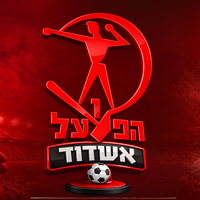
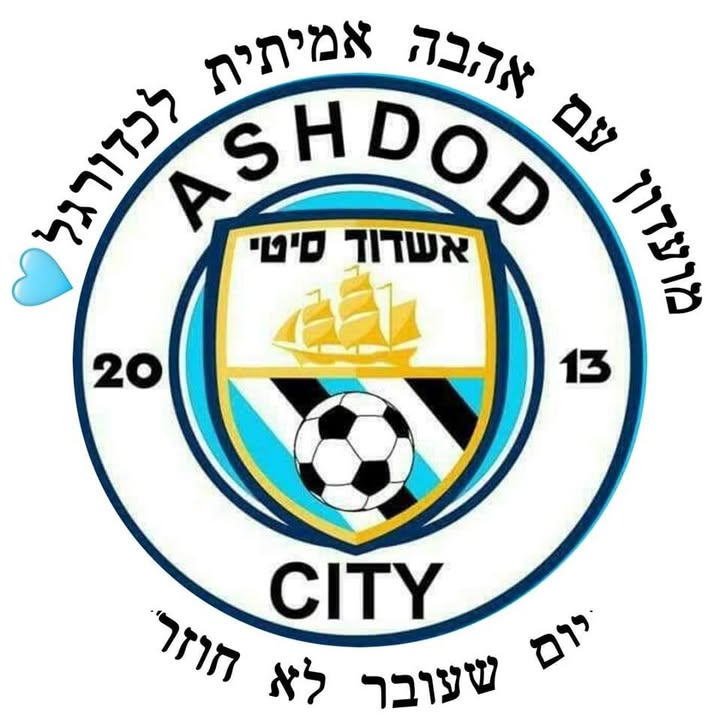
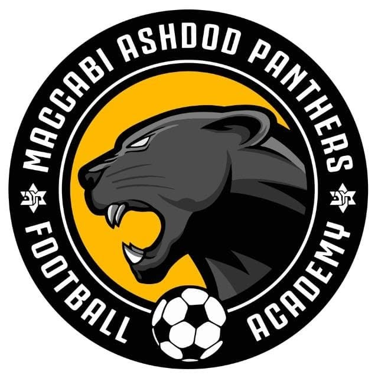

כדורסל · מכבי אשדוד גברים
48 במחצית, 19 אחריה: מכבי אשדוד הפסידה להפועל תל אביב
אשדוד הובילה 48:46 בהפסקה אך הפסידה 67:81 ב־18.10. ניתוח שפרסם אודי הירש באתר מנהלת הליגה ב־20.10 מוסיף מבט על התמודדות ההגנה עם החסימות של הפועל.
לכתבה המלאה ←
בחרו קבוצה או ענף.
כל התוצאות, הסגלים והטבלאות מחכים בפנים.
אשדוד הובילה 48:46 בהפסקה אך הפסידה 67:81 ב־18.10. ניתוח שפרסם אודי הירש באתר מנהלת הליגה ב־20.10 מוסיף מבט על התמודדות ההגנה עם החסימות של הפועל.
לכתבה המלאה ←אחרי ההפסד 1:3 לגן יבנה, לוח ההתאחדות מציג משחק בית לנוער עירוני מול בית״ר עירוני קריית גת ב־23.10, בשעה 14:00, באשדוד סינטטי 2 קטן.
לכתבה המלאה ←לאחר ההפסד להפועל תל אביב, עודכנו פרטי המשחק הבא של נערות א׳ הפנתרות: בית מול מכבי רחובות ב־22.10, בשעה 19:30, במגרש אשדוד סינטטי 2 קטן.
לכתבה המלאה ←עמוס מנסדורף יגיע לדיונה ב־14.11.2026 למפגש על לחץ ותמיכה משפחתית בספורט. לפי החברה העירונית, ההתכנסות ב־09:30 והשיחה תחל ב־10:00.
לכתבה המלאה ←מכבי אשדוד יאשה הפסידה בבית 59:62 לעירוני נס ציונה ב־19.10. לפי טבלת איגוד הכדורסל, לאשדוד ניצחון והפסד לאחר שני משחקים בליגת נוער על דרום.
לכתבה המלאה ←עם השלמת המחזור העשירי ב־19.10, אשדוד ראשונה עם 25 נקודות, אחת מעל בני יהודה וארבע מעל ראשון לציון. כתבת ה־0:0 מול קריית גת עודכנה בתמונת הצמרת.
לכתבה המלאה ←המשחק הבא · תוצאות · סגל · כובשים · טבלת הליגה
כניסה לדף הקבוצה ←
כדורגל · לדף הקבוצה
כניסה ←כדורגל · למדור
כניסה ←
כדורגל · למדור
כניסה ←
כדורגל · למדור
כניסה ←כדורסל גברים · למדור
כניסה ←כדורסל נשים · למדור
כניסה ←כדוריד · למדור
כניסה ←
כדורגל נשים · למדור
כניסה ←טוען את משחקי השבוע…